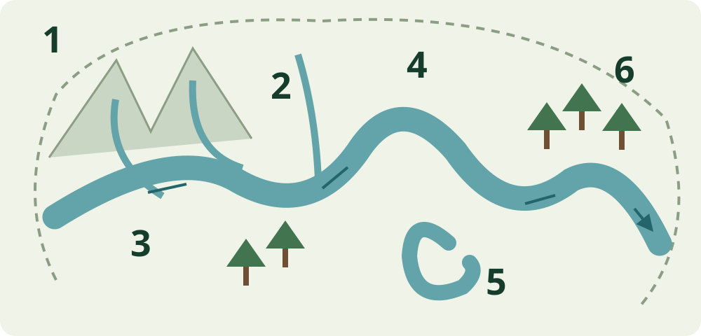
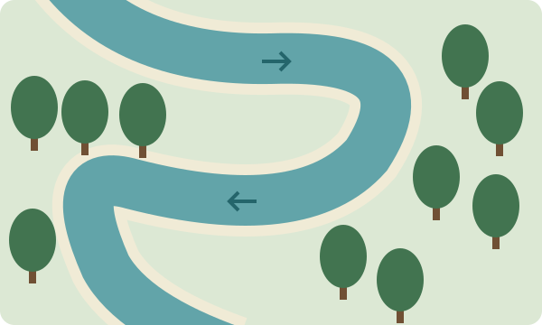

Del relieve al río
Lluvia, escorrentía y quebradas alimentan la red de drenaje. El agua puede transportar sedimentos y materia orgánica entre lugares.
Atlas educativo
Explora cómo el bosque y los sistemas de agua estructuran el paisaje de Madre de Dios.
Cobertura vegetal · MINAM, 2015.
El mapa se cargará al llegar a esta sección.
Haz clic en el mapa para explorar
Cartografía publicada en 2015 y recortada a Madre de Dios. No representa necesariamente el estado actual del territorio.
Explora las categorías originales de la cobertura vegetal representadas para Madre de Dios.
El mapa reúne información de bosques, ríos y humedales de Madre de Dios. La cobertura vegetal procede de la publicación de MINAM de 2015; las demás capas conservan las fuentes y fechas disponibles en sus registros.
Los límites son referencias educativas y no sustituyen cartografía oficial. El mapa no representa necesariamente el estado actual del territorio.
Este visor incluye seis ríos con trazados documentados. El mapa de áreas protegidas utiliza otra base hidrográfica e incluye también Tahuamanu. Las dos selecciones tienen coberturas distintas.
Del mapa a la vida
Bosques, ríos y humedales forman una red de ambientes conectados que sostiene la biodiversidad y la vida de Madre de Dios. El relieve, el suelo y el ritmo del agua ayudan a entender por qué el paisaje cambia de un lugar a otro.
Bosques
Clasificación utilizada: Mapa Nacional de Cobertura Vegetal — MINAM, 2015. Las tarjetas destacan algunas de las categorías que ya puedes explorar en el mapa; no sustituyen su lista completa. Consultar clasificación y páginas →
“Tierra firme” describe terrenos que no reciben la inundación fluvial habitual; no es una categoría adicional de este mapa. “Ribereño” describe la relación con una orilla, no una única unidad de cobertura. La cartografía incluye también vegetación no forestal.
Las relaciones ecológicas de estas tarjetas son explicaciones educativas. No son inventarios de especies, usos o amenazas de cada polígono. La presencia de fauna y el estado de un lugar deben comprobarse en campo.
Ríos y sistemas acuáticos
Una cuenca es el territorio desde el que el agua drena hacia una salida común. Las quebradas y los afluentes llevan agua al río principal. El cauce es el espacio por donde circula el río; sus curvas son los meandros.

Lluvia, escorrentía y quebradas alimentan la red de drenaje. El agua puede transportar sedimentos y materia orgánica entre lugares.
Cuando un meandro queda separado del cauce, puede originar un lago de herradura. “Cocha” es un nombre común de cuerpos de agua amazónicos; no todos tienen ese origen.
Un lago de herradura puede formarse cuando un meandro se separa del cauce. La forma por sí sola no permite fechar ese cambio.
Las crecidas pueden conectar cauce, cochas y bosque ribereño; al bajar el agua, algunas conexiones se reducen. La duración y frecuencia de la inundación importan.
MINAM · sistemas acuáticos · SERNANP · ambientes y recorridos · CINCIA · estudio acuático. Los trazados y sus metadatos originales se conservan en las fichas del mapa.
Humedales
En un humedal, el agua —permanente o temporal— condiciona el suelo y la vida. Puede estar visible en la superficie o saturar el terreno. Las inundaciones y el drenaje favorecen plantas adaptadas a esas condiciones y cambian la disponibilidad de hábitat para la fauna.
Un humedal temporal también es importante: puede almacenar agua durante una crecida y ofrecer recursos en una época del año. “Temporal” no significa “sin vida” ni “prescindible”.
La vegetación y los suelos pueden almacenar carbono. En algunos ambientes saturados se acumula materia orgánica; su cantidad depende del lugar y requiere mediciones. Peces, anfibios, aves y otros animales utilizan diferentes ambientes acuáticos.
Agua, pesca, frutos, desplazamientos y conocimientos locales conectan a las personas con los humedales. La calidad del agua y las conexiones entre ambientes importan para esos usos.
Leer el mapa con cuidado. La capa MasaAgua registra lagunas y pantanos. Un registro “Pantano” no identifica por sí solo un aguajal, su flora o su fauna. La unidad “Bosque inundable de palmeras” procede de otra fuente: MINAM, 2015. Sus categorías no son intercambiables.
Todo está conectado
Vegetación, suelo y lluvia.
Ríos, crecidas y conexiones.
Ambientes del agua y del suelo.
Alimentación y desplazamientos.
Especies y relaciones.
Usos y conocimientos.
Decisiones sobre toda la red.
Las flechas representan relaciones, no etapas obligatorias. Los ríos modifican las orillas; las crecidas conectan algunos ambientes; el bosque influye en la escorrentía y la llegada de sedimentos. Los animales usan distintos hábitats, y una intervención humana puede afectar agua, suelo, vegetación y fauna a la vez.
Servicios ecosistémicos
Almacenamiento e intercambio de agua. Su regulación depende del suelo, la vegetación y las conexiones de la cuenca.
Biomasa y suelos almacenan carbono; no todos los ambientes lo hacen en igual cantidad.
Hábitats, alimento y espacios para reproducirse o desplazarse.
Frutos, semillas, fibras y otros productos cuyo aprovechamiento necesita manejo.
Descomposición, sedimentos y organismos participan en el reciclaje de materia.
Prácticas, memorias y conocimientos asociados al territorio y al agua.
Lugares donde observar, investigar y aprender sobre procesos naturales.
Síntesis educativa: MINAM, 2019, IIAP, 2021 y estudios de castaña. Los beneficios dependen del estado de cada ambiente y de cómo se usa.
Cambios ambientales
Estos mecanismos pueden coincidir, pero su intensidad y extensión varían. Un mapa de cobertura de 2015 no muestra por sí solo los cambios recientes ni permite asignar una amenaza a todos los lugares.
Pérdida de cobertura → fragmentación → modificación del hábitat.
Para conocer dónde y cuándo ocurrió una pérdida, hay que consultar una serie con fechas y método, como el monitoreo de Geobosques.
MINAM · monitoreo de bosques →Cambio en la calidad del agua o del suelo → exposición de organismos → posibles efectos en usos humanos.
El estudio de Gerson y colaboradores (2022) encontró diferencias en mercurio entre sitios próximos y alejados de la minería en Madre de Dios. No es un diagnóstico uniforme de toda la región.
Consultar el estudio y su alcance →Quema → pérdida o modificación de vegetación → cambios de hábitat.
Sequedad, combustible e ignición condicionan el riesgo. SERNANP documenta acciones de prevención en Madre de Dios; eso no identifica incendios actuales en este mapa.
SERNANP · prevención regional →Remoción de suelo y bosque → cambios del agua y sedimentos → alteraciones de comunidades acuáticas.
CINCIA comparó estaciones con diferentes evidencias de impacto en el río Madre de Dios y tributarios. Los resultados corresponden a los sitios y periodo estudiados.
CINCIA · proyecto 2020–2022, publicación 2023 →Ciencia y monitoreo
Campo + datos geográficos + satélites = conocimiento del territorio
En una parcela forestal se identifican y miden árboles y se pueden repetir mediciones. Los inventarios registran especies y condiciones según un diseño de muestreo; no abarcan automáticamente todo el departamento.
Un GPS ubica los puntos; muestras de agua y observaciones de organismos ayudan a interpretar lo que ocurre. Se registran fecha, equipo, método y limitaciones.
Ver ejemplos en los estudios de castaña →Un Sistema de Información Geográfica permite relacionar geometrías con registros. Antes de superponer capas hay que revisar su sistema de referencia, escala, fecha, precisión y propósito.
Una clasificación de cobertura asigna clases a superficies. Su leyenda y validación son esenciales: un color no demuestra por sí solo la presencia de una especie.
Consultar cómo se elaboró este mapa →Sentinel-2 y Landsat registran bandas espectrales que ayudan a estudiar vegetación, agua y cambios de cobertura. Comparar fechas requiere corregir o excluir nubes y considerar estación, resolución y condiciones de captura.
Una comparación temporal usa observaciones comparables y documenta incertidumbres. Campo y satélites se complementan; el visor educativo no realiza monitoreo en tiempo real.
Ciencia e Investigaciones →Consultar documentos →Aprender explorando

Elige el elemento central de la ilustración.
Abre la ficha del río Tambopata. Después activa Humedales y compara las lagunas y pantanos registrados. La superposición muestra cercanía; no demuestra una conexión hidrológica permanente.
Para buscar aguajales, consulta “Bosque inundable de palmeras” de la cobertura vegetal, y revisa su fuente y fecha.
Observa la capa, el nombre y el registro. Si un dato no está disponible, no lo completes por suposición.
Datos y metodología
Los métodos y fuentes originales siguen disponibles en el mapa. Este resumen ayuda a interpretar las capas y sus límites; una fecha de incorporación o consulta no equivale a la fecha de observación.
Datos del visor: registros · cobertura vegetal · descripciones de MINAM · contexto educativo.
Geografía y naturaleza
Un gradiente entre zonas bajas y relieves más altos.
Esquema educativo · sin escala

El plan regional de 2020 consigna un rango de altitud entre 176 y 3 967 m s. n. m., desde Tambopata hasta el cerro La Merced, en Manu.
GORE Madre de Dios · 2020, página 2. Rango documental; no es una medición actual de los extremos. Esquema educativo, sin perfil topográfico exacto.
Cuencas e intercuencas de la Amazonía peruana.
Los ríos organizan el drenaje del territorio en cuencas e intercuencas. El plan regional incluye las de Las Piedras, Inambari, Tahuamanu y Tambopata, junto con las intercuencas del Madre de Dios.
GORE Madre de Dios · 2020, páginas 27–28 · diagnóstico hidrológico de ANA.
Explorar ríos en el mapa →Climas cálidos y lluviosos, con variaciones en el territorio.
El plan regional identifica climas cálidos y lluviosos, además de zonas templadas. INEI reúne registros anuales de temperatura, humedad y precipitación de SENAMHI.
GORE Madre de Dios · 2020 · INEI, Compendio 2025, cuadro 2.17 (registros 2015–2024). No es un pronóstico del día.
Personas y territorio
Comunidades, lenguas y trabajo forman parte de la vida del territorio. Estos dos casos documentados ofrecen una introducción a su dimensión humana y cultural.
Ese Eja · cuencas de Madre de Dios y Tambopata.
La BDPI sitúa al pueblo y la lengua Ese Eja en las cuencas de los ríos Madre de Dios y Tambopata. Esta relación entre lengua y territorio describe un caso concreto, sin atribuir las mismas prácticas a todas las comunidades.
Ministerio de Cultura · BDPI · ficha Ese Eja, sin fecha indicada.
Recolectores y concesionarios de castaña documentados en un estudio de 2017.
Un estudio publicado en 2017 documenta recolectores y concesionarios de castaña en Madre de Dios y su conocimiento sobre producción. Es una experiencia de trabajo e investigación, no un retrato completo de la población regional.
Plantas, trabajo y cultura →Thomas y colaboradores · 2017